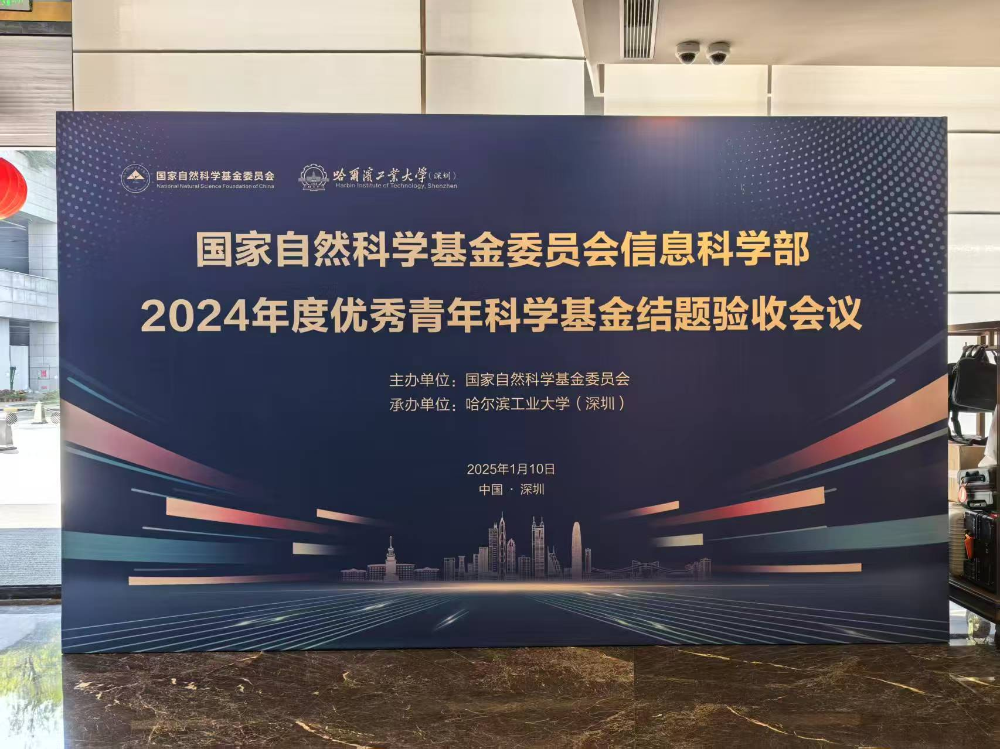

本次会议旨在对2024年度优秀青年科学基金项目进行结题验收，总结项目研究成果，交流科研经验，推动信息科学领域的创新发展。 会议由国家自然科学基金委员会主办，哈尔滨工业大学（深圳）协办，于2025年1月10日举行。
在会议过程中，实验室团队承担了重要工作。 俞俊老师统筹会议的策划与筹备工作，与国家自然科学基金委员会保持密切沟通，确保会议的各项安排符合要求，为会议的顺利进行做出了突出贡献。 包俊老师、刘卜瑜老师、黄强老师、张永岗老师深入参与会场布置、设备维护等工作，及时解决会议过程中出现的各种问题。 硕士生朱奕锋、赵德龙、代思君积极参与会议志愿活动。 团队的辛勤付出得到了国家自然科学基金委员会和参会人员的高度认可，为我校赢得了良好声誉。